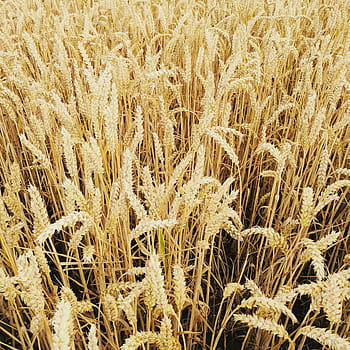
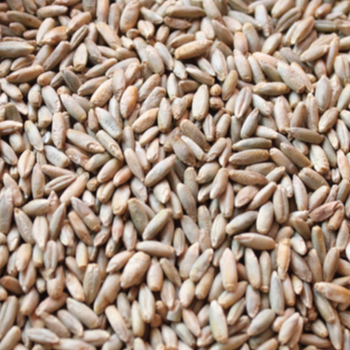
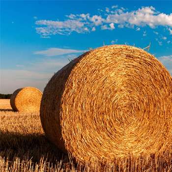
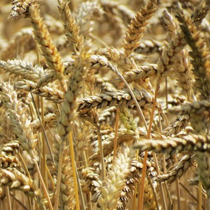
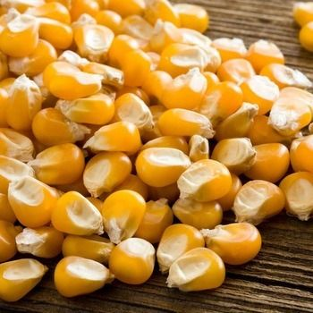

Titulo de seccion
Nuestras materias primas
En esta pagina encontrarás todo el stock que Agrocava SL dispone, gracias a nuestras instalaciones y maquinaria para hacer copos y decorticar estas materias primas podemos conseguir nuevas formas de transformación de estas:
Listado de materias primas

Trigo primera variedad

Centeno

Paja

Trigo segunda variedad

Granos de maiz